Menu-bar companion
Surge
A companion that lives in your menu bar, with glow, sound and handy tools.
- Surge Dock
- Charge glow
- Flowing battery icon
- Sounds and ripples for keys and clicks
- Quick Notes
- Clipboard
- Launchpad

A browser that feels alive. Liquid glass, jelly motion, and zero clutter.
For Mac and Windows. Source and every release on GitHub.
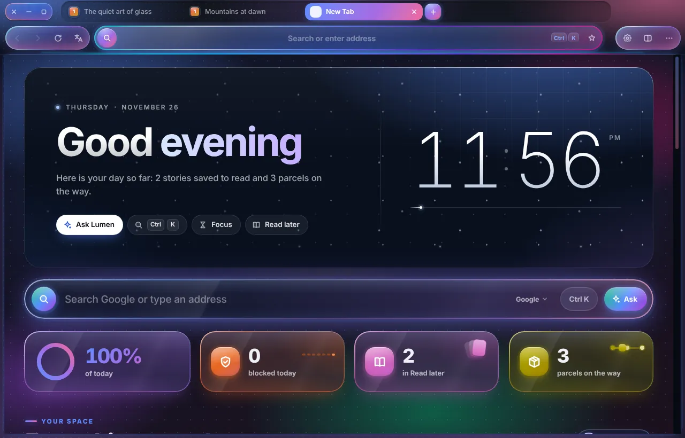
Only what Lumen does. Nothing every other browser already has.
Lumen 4.4 shows you every move Claude makes in a tab: its own glowing cursor, a label for what it is doing and a soft edge of light until it is done. 4.4.1 starts you off with one-tap tasks that fit the page, and 4.4.2 runs any finished task again with one tap. 4.4.3 makes passkeys tell you exactly what is going on, with your password or Safari one tap away. 4.5 is Maison: a calm monochrome look with warm paper and deep ink, big serif titles, a new logo, buttons that fill with colour that flows in under your pointer, and solid menus with no blur or lag. 4.4.25 fixed the tab preview that could leave ghost copies behind after you hover your tabs, and the What's new intro closes cleanly. 4.4.23 fixed passkeys for real: Sign in with a passkey now works inside frames and sign-in popups, more sites can save one, and a passkey or password Lumen cannot open is never lost. And from 4.4.4, every update plays its own short film again. 4.4.5 flips between Ask and Do it for me with Option Command A, 4.4.6 saves your Shopify orders to Parcels with the right carrier, 4.4.7 makes every page title fit its banner, 4.4.8 tracks a parcel straight from any carrier link, 4.4.9 takes you to the parcel when there is news, 4.4.10 makes that parcel glow all the way round, 4.4.11 copies clean links, with redirects unwrapped and trackers removed, 4.4.12 copies the page with its title as a clickable link, 4.4.13 makes the update card title fit every version in full, 4.4.14 undoes a bulk tab close in one tap, 4.4.15 brings back a window you closed by mistake, 4.4.16 lists everything you closed in History, Recently Closed, 4.4.17 keeps that list across a restart, 4.4.19 lets the command bar search it, 4.4.20 copies all your tab links clean, as titled links, 4.4.21 adds clipboard history on Option V, and 4.4.22 makes Downloads over, with live speed and time left, kind filters and search, and opens History twice as fast. Claude in Lumen arrived in 4.3, and since 4.2 nothing lags.

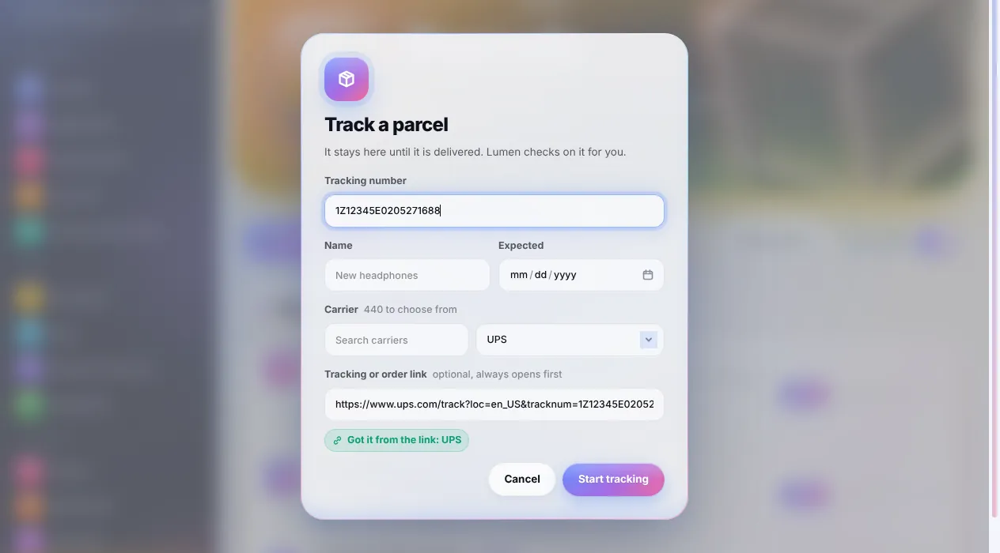
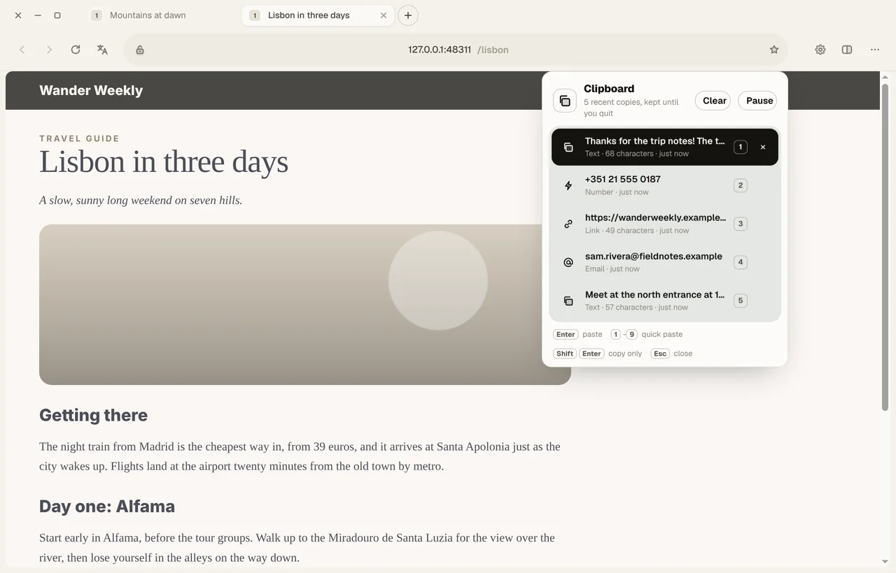

When Claude works in a tab, you watch it happen. A glowing Claude cursor glides to every button and field it uses, a small label says what it is doing, and every click sends out a ripple. The tab gets a soft edge of light while Claude is at it and lets go when the task is done. None of it gets in your way.
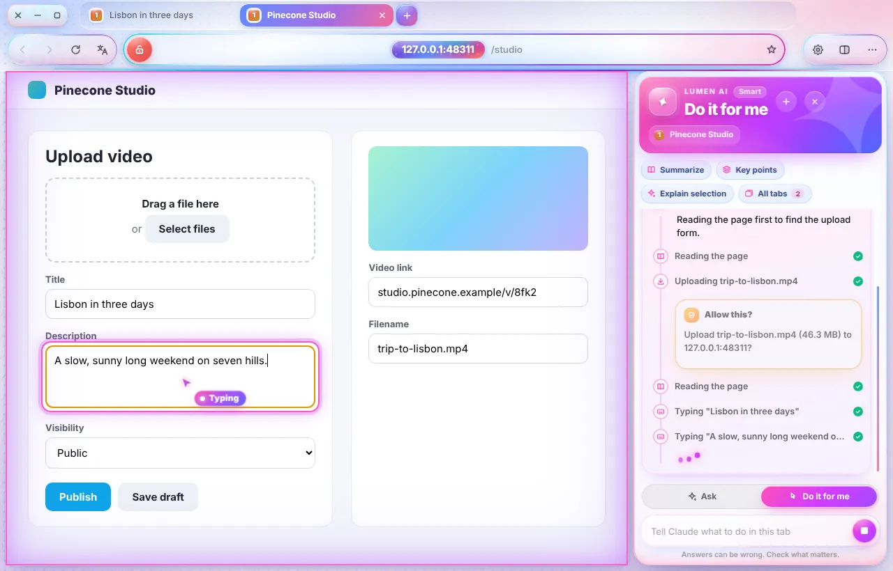
Switch the AI panel to Do it for me and tell Claude what you want done in the tab. It reads the page, clicks, types, scrolls, fills in forms and uploads files, and every step shows up live as it goes. It asks before anything that cannot be undone, never types passwords or card numbers, and only uploads files you named. Stop it any time.
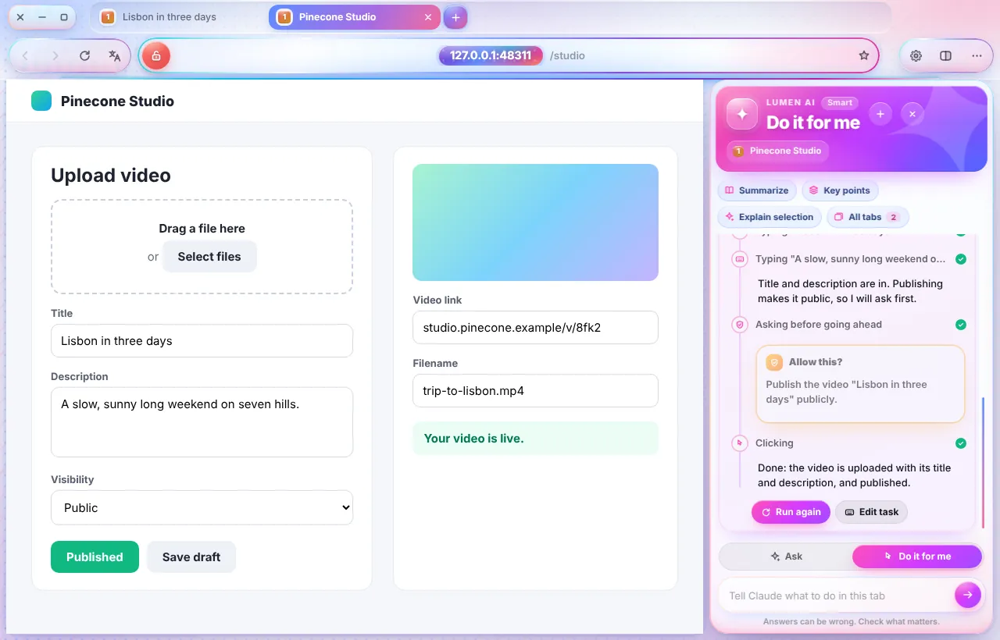
Settings, History, Bookmarks, Downloads and Passwords are preloaded in the background, so they open the moment you ask. Settings sections switch in place with no reload. The AI panel, the find bar and the sidebar glide without making the web page redraw on every frame, so even heavy sites stay smooth. Every animation is still there.
Lumen is ready in about 1 second instead of 4, with no freeze on first launch. Results show up as you type, and clicking, closing and switching tabs, Back and Forward, and menus all answer within about 20 ms.
Every tab gets a chat with streaming answers. Answers quote the page, and clicking a source jumps to the exact passage. Ask about all your open tabs at once, or tell Cmd K what to do, like close all YouTube tabs.

Home opens on a clean new banner with a premium clock and a live summary of your day. Prefer the old arrangement? Switch between Modern and Classic layouts in Settings or Customize. Jelly springs are back on every button, tab, menu and card, and every page glides when you scroll.
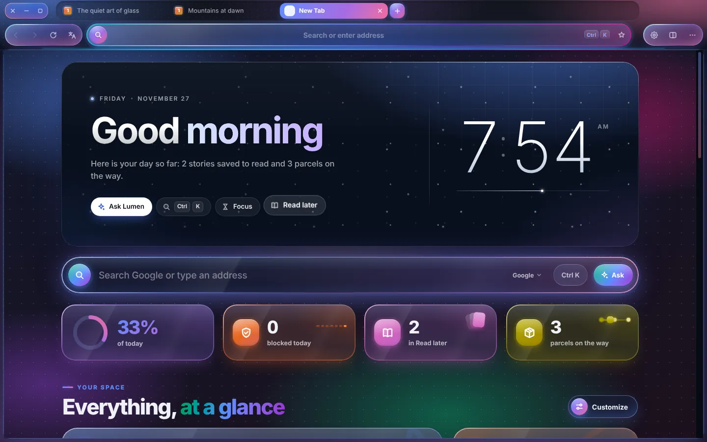
Every new tab opens on a big hero banner with a sleek clock and a live summary of your day. Search smartly, glance at pulse tiles, drag widgets wherever you like, and let Match theme backgrounds tie it all together.
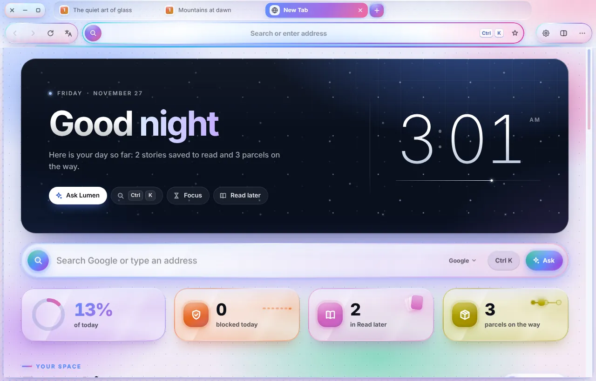
Every Settings and library page has been rebuilt with its own hero banner. Each section gets its own color and animated dots, so you always know where you are.

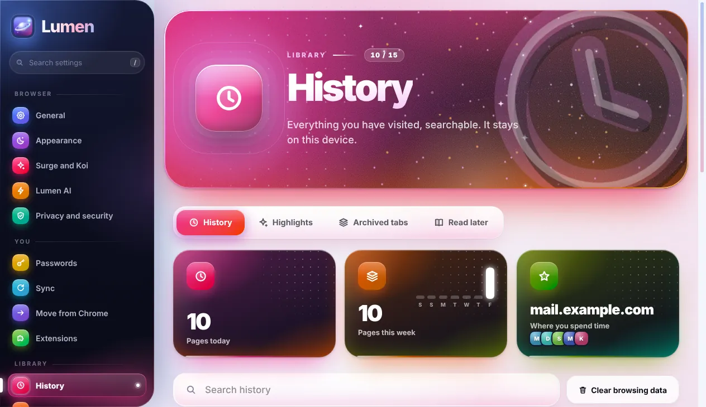

A brand new command bar, plus right-click menus and dialogs that Lumen draws itself in liquid glass, instead of the plain system ones.
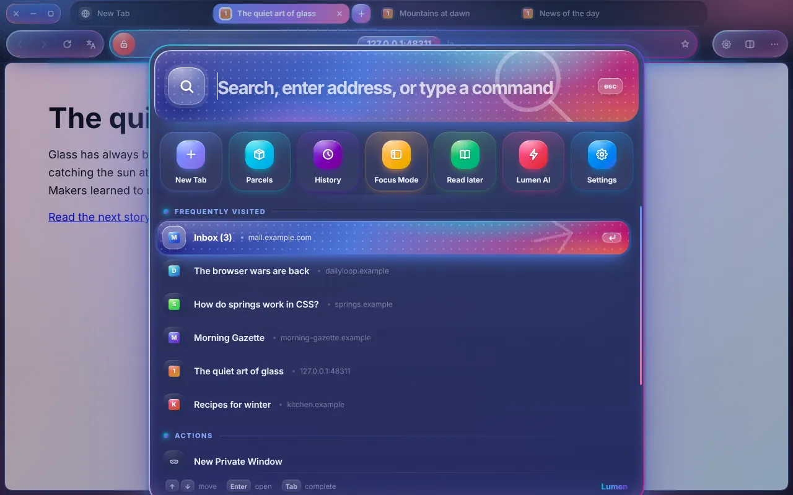


Articles become magazines. Lumen paints cover art from the page's own colors, lays the story out like a magazine, and gives you six themes, a focus spotlight and a reading dock.

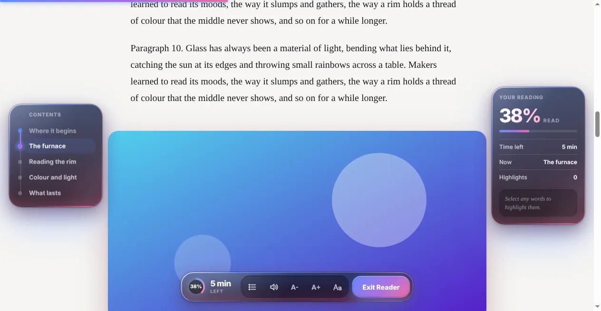
Password and passkey autofill, strong passwords made for you, and a translate card for pages in other languages.


Each new version opens with a trailer-style intro. A new update card shows the download as it happens, and a new restart screen carries you into the fresh version.

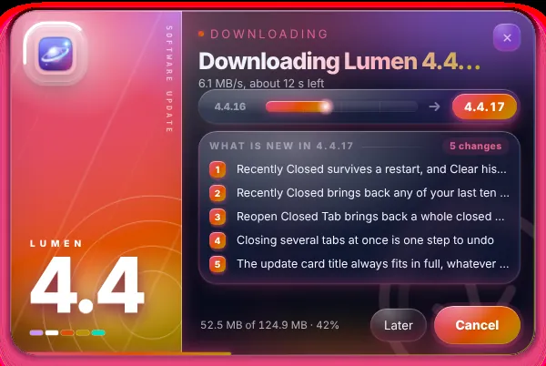
Under all that glass, Lumen 4 does less work. These are results from our own tests.
Opens a new tab instantly.
A new tab at rest went from about 33% CPU to under half a percent, in our tests.
About this much less memory, because Surge and Koi now run as their own apps, in our tests.
Smooth scrolling all the way through Settings.
Figures are from our own testing and will vary with your machine and the pages you open.
The things you would normally add with extensions are simply part of Lumen.
Built right in, on every site.
Ask about whatever page you are on.
Even the sites that never made one.
Your deliveries, right in the browser.
Save a story now, read it when you have time.
Surge and Koi used to run inside Lumen. In 4.0 they are their own apps, each with its own download, and Lumen gets lighter for it. Grab and Drop join the family too.
A companion that lives in your menu bar, with glow, sound and handy tools.
A springy fan of your apps that opens instantly, right under your cursor.
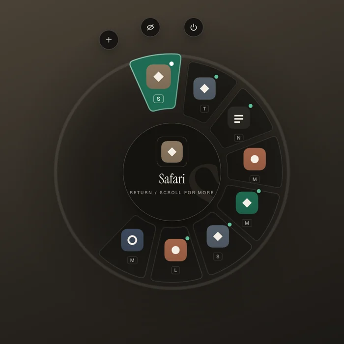
Search any app and install it in one click, straight from the official source. For Mac and Windows.
Shop any store in the world from one app, watch prices on anything you save, and track every order and parcel. New in the family.
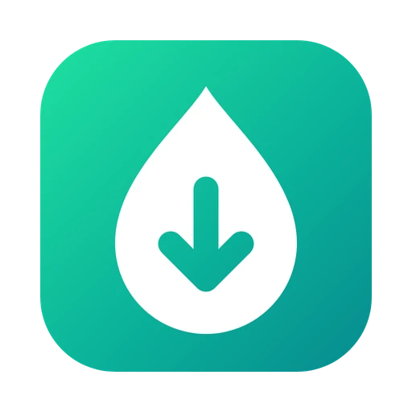
For Mac and Windows.
Open the download and drag Lumen to Applications. The first time, right-click Lumen and choose Open.
If SmartScreen appears, click More info, then Run anyway.
Nothing to do. Lumen updates itself.
Your menu bar, alive. Charge glow, a flowing battery icon, sounds and ripples for every key and click, and handy tools one click away.
For Apple Silicon Macs. Surge 3.0.6 updates itself and plays a short What's new film after each update. New in 3.0.6: Surge Dock is smaller. It starts about a fifth smaller, and the Size slider still goes bigger or smaller.
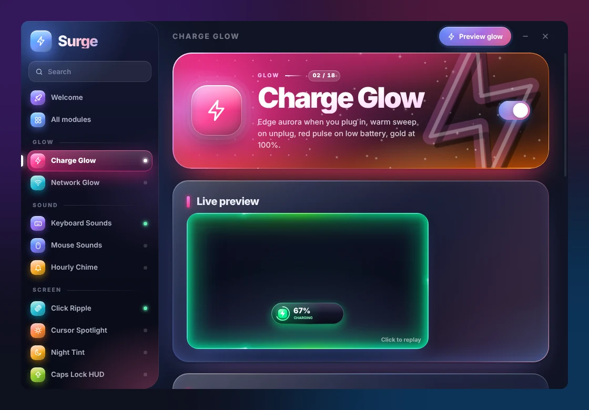
Surge sits in your menu bar and adds glow, sound and handy tools to your Mac. Around 20 modules, each one a switch you flip on or off.
Open Surge from the menu bar to see your charge at a glance and switch modules on and off. Quick actions for Caffeine, Focus, Spotlight and Notes sit right underneath.

Surge puts a colorful battery in your menu bar. While you charge, light flows through it. It comes in light and dark menu bar versions, as a plain battery or a chip with your percentage.


An aurora glows around the edge of your screen when you plug in, a warm sweep plays when you unplug, a red pulse warns of low battery, and it turns gold at 100%.
Soft sounds for your keys and clicks, with a volume slider right in the menu.
A ripple spreads out from every click, so you always see where it landed.
Quick Notes saves as you type, and Command Shift N shows and hides it. Clipboard history keeps what you copied, so you can search it and paste anything again. It is kept in memory only.
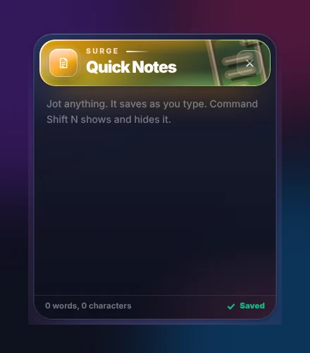
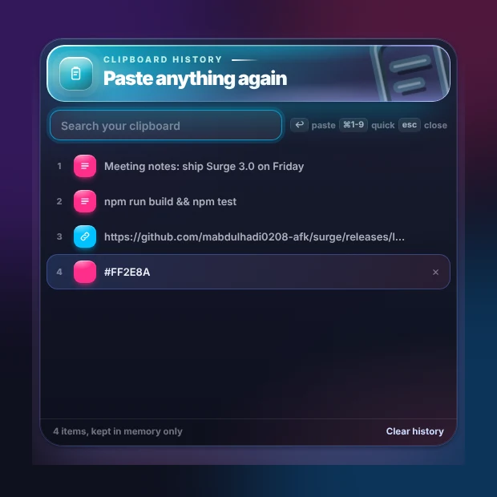
Small glass capsules tell you what just changed, like Caffeine keeping your Mac awake. When a new version is out, Surge downloads it and updates itself.
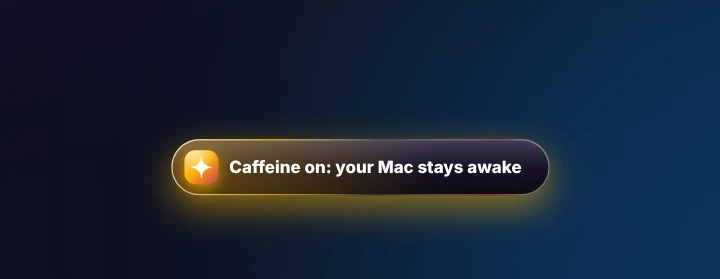
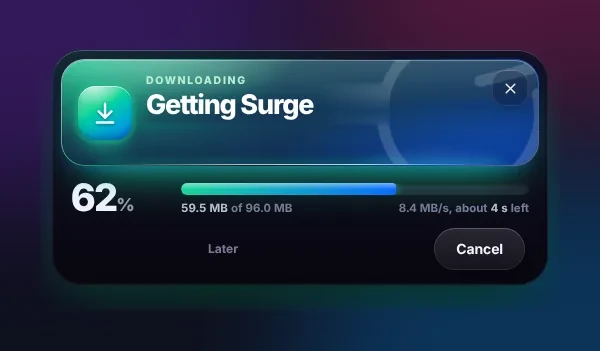
For Apple Silicon Macs.
Open the download and drag Surge to Applications.
The first time, right-click Surge and choose Open. It then lives in your menu bar.
Nothing to do. Surge updates itself.
Every app, one flick away. Press a shortcut and your apps bloom around your cursor in a springy fan.
For Mac. Koi 2.1.3 updates itself, plays its What's new by itself after each update, and wears a new colourful fan icon.

No more hunting through the Dock. Koi opens instantly, right where your cursor already is.
Koi 2.1.3 replaces the Mac app switcher with one that shows a live preview of every window. Hold Cmd and tap Tab, and the selection glides from window to window. A quick tap jumps straight back to the app you really used last.
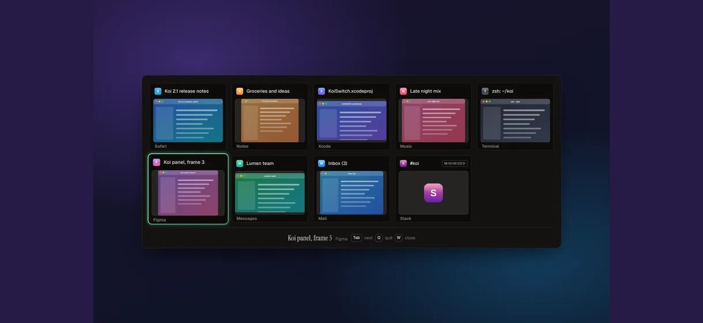
Press your shortcut and your apps spring open around the cursor. Every app has a letter: type it to open that app. Press Return to open the one in the middle, or scroll for more.
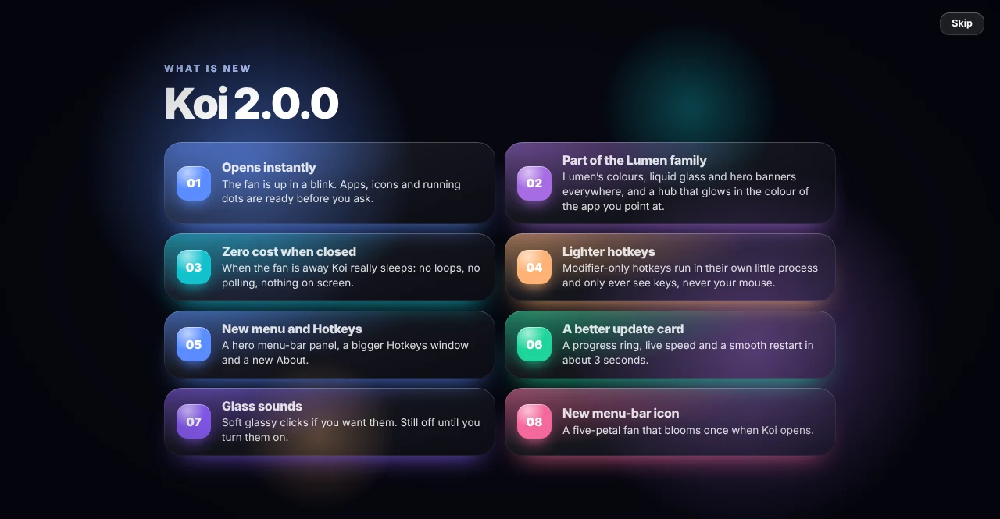
A row of actions sits right above the fan, so you can open a new window, hide an app or quit it without leaving Koi.

Pick your own shortcut for opening the fan, then give any app its own hotkey, like Option S for Safari, and jump straight to it from anywhere.

Koi lives in your menu bar. From there, choose a dark or light theme, the size of the fan and how lively the motion feels, and switch on optional glassy sounds.

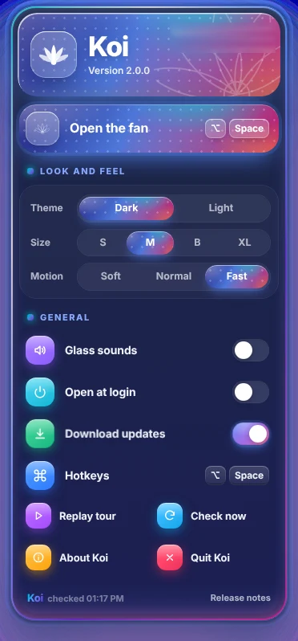
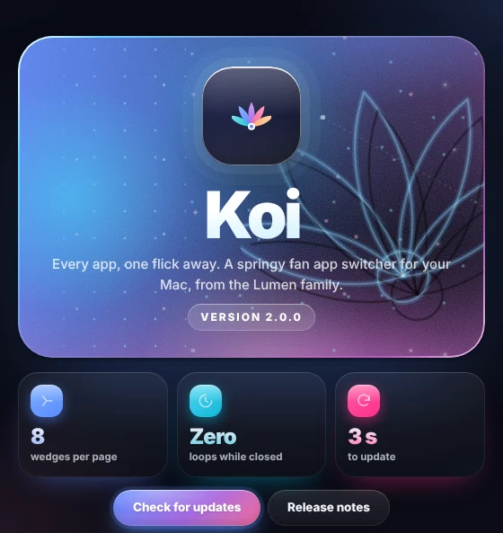

When a new version is out, Koi downloads it and updates itself. Nothing to do on your side.
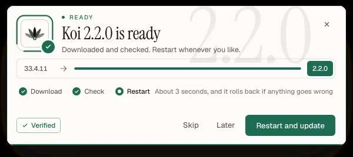
For Mac.
Open the download and drag Koi to Applications.
The first time, right-click Koi and choose Open. It then lives in your menu bar.
Nothing to do. Koi updates itself.
Any app, one click. Search, hit Get, done. Grab downloads apps straight from the official source, with no browser and no fake download buttons.
For Apple Silicon Macs and Windows. Grab 2.1.1 updates itself, shows What's new after each update, and asks for macOS App Management so it can keep your apps up to date.
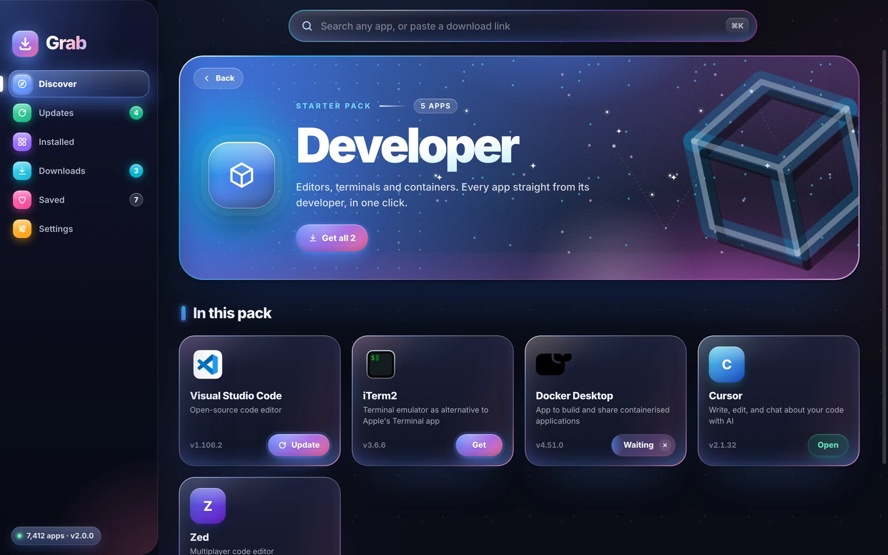
No hunting for the right website, no ads dressed up as download buttons. Grab finds the real app and installs it for you.
Search more than 7,000 Mac apps and hit Get. Grab downloads the real app from its developer, checks it and puts it in Applications.

Each app opens in its own panel with its official download address, version and price. Well-known paid apps are labelled, and Buy opens the developer's own site.
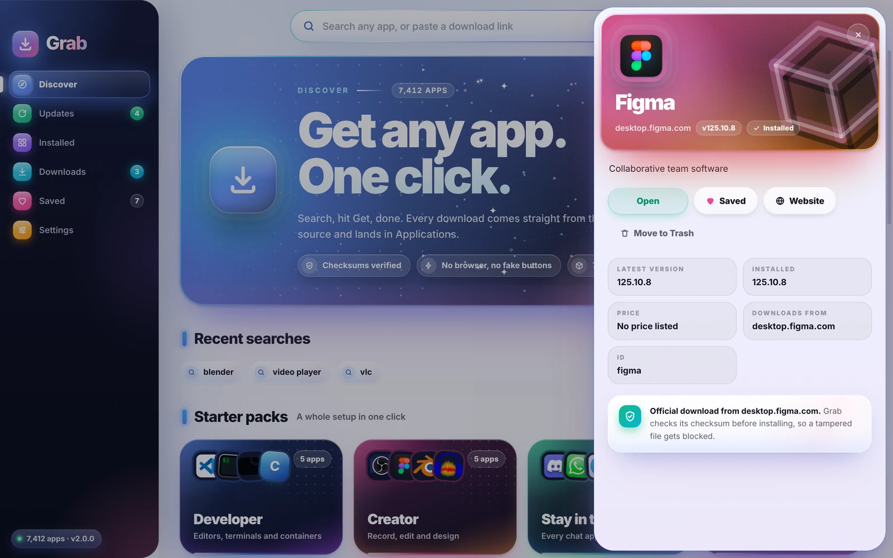
Grab finds the apps you already have that are out of date. Update them one at a time or all at once.

Grab 2.1.1 wears Lumen's design, with big colour banners, glass cards and Lumen's calm, springy motion. Light, dark or automatic, and it updates itself.

Type a name and Grab searches a catalog of more than 7,000 Mac apps. Hit Get and you are done.
Every app comes from the official download, and Grab checks the checksum before it installs. No fake download buttons.
Grab downloads the app, opens the DMG or zip and drops the app into Applications for you. No browser needed.
Grab finds the apps you already have that are out of date. Update them one at a time or all at once.
Paste any direct download link (.dmg, .zip, .pkg, .exe or .msi) and Grab downloads and installs it.
On Windows 10 and 11, Grab searches the official winget catalog and installs quietly, with every installer hash checked.
For Mac and Windows.
On Mac, open the download and drag Grab to Applications. On Windows, run the installer.
On Mac, right-click Grab and choose Open the first time. On Windows, if SmartScreen appears, click More info, then Run anyway.
Nothing to do. Grab updates itself.
Every store. Every parcel. Discover real products from hundreds of stores, buy in one step, save anything with a price, and follow every delivery from order to doorstep.
For Apple Silicon Macs and Windows. Drop 1.6 updates itself and shows What's new after each update. New in 1.6: a whole new Drop. Discover reads like a magazine, store and product pages open on big banners and galleries, every price shows in your currency, and every button fills with colour that flows in under your pointer.

One app for every store you buy from and every parcel on its way to you.
1,687 stores from more than 40 countries in 20 categories, with search, filters and follows. Tap a store and its own page opens right in Drop, with its products, sizes, stock and prices. Pick a size, tap Buy, and the store's checkout opens with it in your cart.

Products you can buy right in Drop come first, then the web and the stores you pick, as tabs or two side by side.

Save any product in one click, picture and all. Drop keeps its price history, checks it while it runs and tells you when it gets cheaper or comes back in stock.
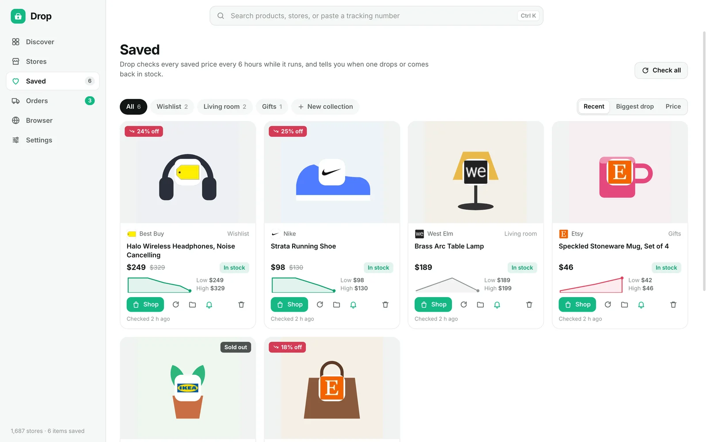
Orders land in Drop by themselves when you check out. Paste any tracking number or link from 441 carriers and follow it from ordered to delivered.
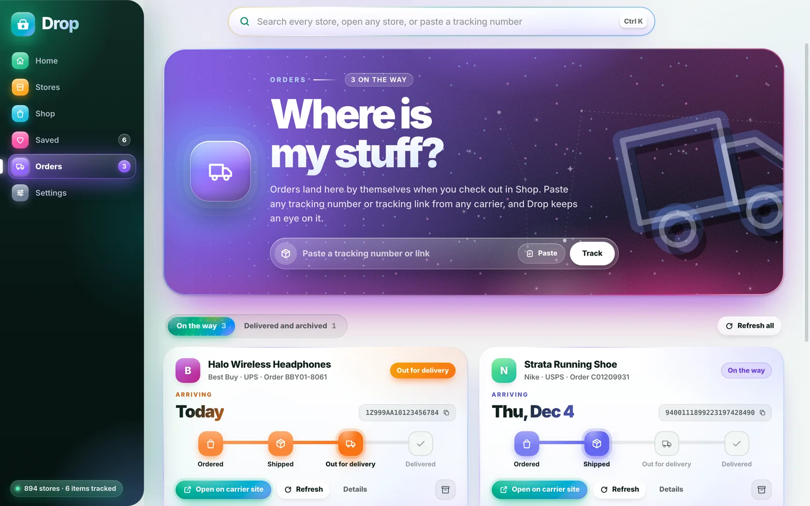
No accounts, no servers and no analytics. Drop only talks to the stores and carriers you open, and it updates itself.
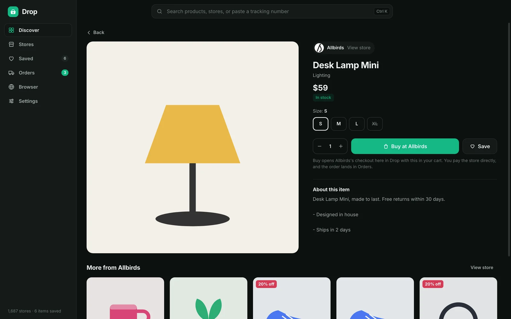
For Mac and Windows.
On Mac, open the download and drag Drop to Applications. On Windows, run the installer.
On Mac, right-click Drop and choose Open the first time.
Nothing to do. Drop updates itself.